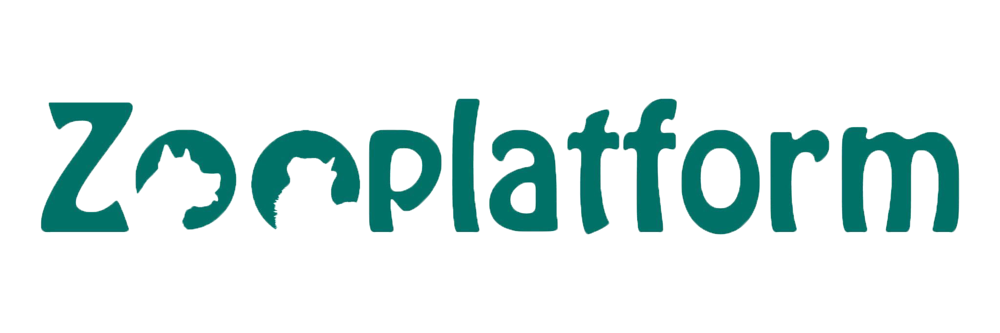

Головна
Песики
Котики
Про нас
Допомогти
Розташування притулку «Zooplatform»: село Вороньків, Київська область.
Контактний номер телефону: +380731021283 Марія
Instsgram: zoolpatform
Facebook: Zooplatform Adopt